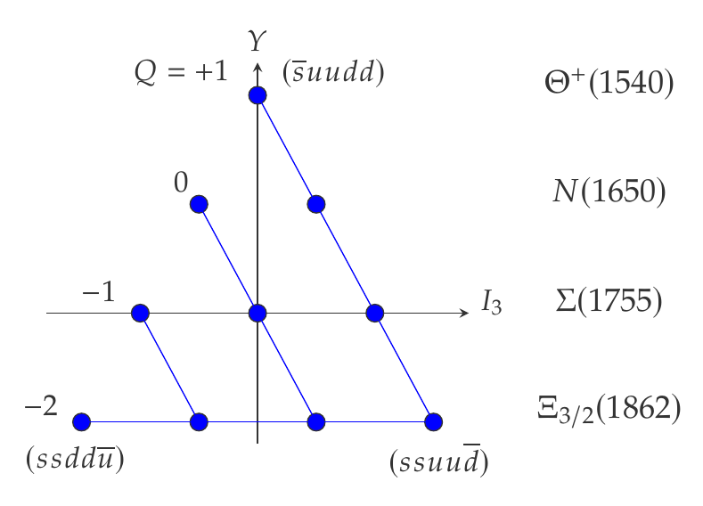

Physics Motivation
'Do particles made of 5 quarks (pentaquarks) exist?' In 2003, the LEPS experiment reported the discovery of the Θ+ (uudds̄). Because it has a strangeness of +1, it cannot be formed by any 3-quark combination, making it a true exotic particle. This sparked immense excitement globally. However, subsequent high-statistics experiments worldwide failed to find it, leading the community to largely conclude it was a statistical fluctuation, and it was removed from the Particle Data Group listings. Yet, certain theoretical models (like the chiral soliton model) strongly predict its existence with an extremely narrow width, leaving the possibility that previous null results missed the signal due to overwhelming background or specific kinematics. The ultimate motivation for this experiment is to put a definitive end to the most intense controversy in the history of modern hadron physics.

The anti-decuplet of baryons predicted by the chiral soliton model. The exotic state at the top corner with strangeness +1, which does not exist in standard quark models, is the Θ+ pentaquark.
The Experiment
We propose a final, decisive attempt to search for the Θ+ through direct formation using the K+d → K0pp reaction with a 0.5 GeV/c K+ beam at J-PARC. Using the HypTPC and a 1-T superconducting magnet, we will exclusively measure the decay products (K0 and proton) with minimal background. We expect to collect data with three orders of magnitude higher statistics than previous efforts in just two days of beam time, providing the ultimate 'yes or no' answer.